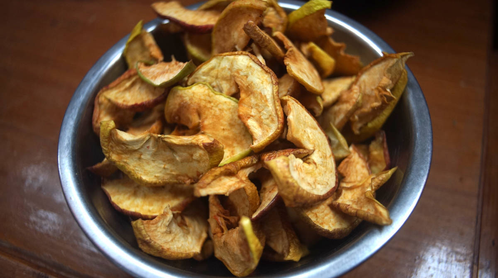

sun driers
Dehydrating fresh foods when they are in season is another way to save energy, it also reduces the volume of food, saving precious space and weight on board. Drying food with the sun on a boat is more efficient in warm places.
When drying food, pick quality produce, and wash items well. This website has good information. Pre-treating certain fruits(apples, apricots, peaches, and pears) with ascorbic acid(2 ½ tbsp:1 quart water), citric acid(1 tsp:1 quart cold water) or lemon juice(1:1 cold water) will help preserve their nutrients and color. Soak for 10 minutes, then remove with a slotted spoon, drain and proceed to dehydrate.
There are solar driers on the market, but building one is inexpensive, and requires few parts. It consists of layering shelves made with screens (to allow air to pass all around), and covering it with a net to protect from insects. When insects aren’t an issue, another solution is to string the pieces of food with a strong thread and to hang them in the sun (may not work well on windy days). In japan, this is the technique used to dry entire hachiya persimmons, but the process for an entire fruit is longer, and can take eight weeks of drying and massaging, maybe not a good idea for a cruising yacht. Cutting fruit into small pieces will hasten drying. The higher the water content, the larger the slice size should be.
We experimented with drying bananas and vegetables on deck while in fiji, using a wide metal bowl we had onboard. It worked well enough, but we had to flip the pieces often to dry them well on both sides. This technique is not as efficient as a suspended drier, but it works well for small quantities. We would take the bowl in at night if the drying process wasn’t complete, and put it back on deck come morning.
Check that each piece is dried uniformly, and pack them in airtight containers. For long-term, it is a good idea to vacuum seal them, or to add packets of food-safe dessicants. Properly stored, dried fruits keep well for six to 12 months. The reconstituted food retains most nutrients. We like to add them to pasta or rice water while cooking.